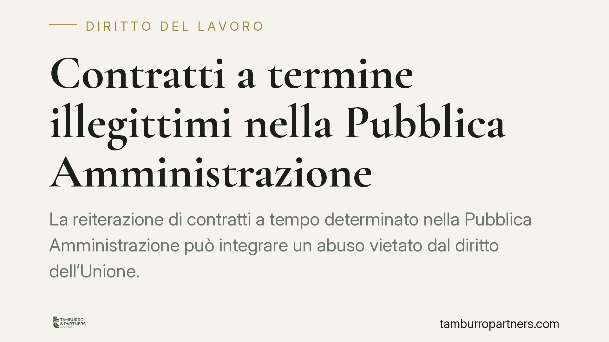

Contratti a termine illegittimi nella Pubblica Amministrazione
La reiterazione di contratti a tempo determinato nella Pubblica Amministrazione può integrare un abuso vietato dal diritto dell'Unione. A differenza del settore privato, qui non opera la conversione in rapporto stabile. Resta però il diritto a un risarcimento, il cosiddetto danno comunitario. Capire quando il ricorso al termine diventa illegittimo è decisivo per il lavoratore precario pubblico.

Il doppio binario pubblico-privato
Nel lavoro privato l'abuso dei contratti a termine reiterati produce di norma la conversione del rapporto a tempo indeterminato. Nel pubblico impiego questo meccanismo non opera.
Il motivo ha rango costituzionale. L'articolo 97 della Costituzione impone che l'accesso ai pubblici uffici avvenga per concorso. Ammettere la conversione automatica significherebbe aggirare quella regola, creando una via d'ingresso parallela alla selezione pubblica.
Di conseguenza il legislatore ha costruito un regime separato. Il lavoratore pubblico illegittimamente precarizzato non ottiene la stabilizzazione, ma conserva una tutela di carattere risarcitorio.
Inquadramento normativo
La norma centrale è l'articolo 36, comma 5, del D.lgs. 165/2001. Essa stabilisce che la violazione delle disposizioni sull'assunzione o sull'impiego dei lavoratori da parte della PA non può in alcun caso comportare la costituzione di rapporti a tempo indeterminato, fermo restando il diritto del lavoratore al risarcimento del danno derivante dalla prestazione resa in violazione di norme imperative.
Su questo impianto interno si innesta il diritto dell'Unione. La Direttiva 1999/70/CE, che recepisce l'accordo quadro sul lavoro a termine, impone agli Stati membri di prevedere misure effettive contro l'utilizzo abusivo di una successione di contratti a tempo determinato. In assenza della conversione, lo Stato deve garantire una sanzione alternativa adeguata ed effettiva.
Il punto di equilibrio tra divieto di conversione e obbligo di tutela effettiva è stato fissato dalle Sezioni Unite della Cassazione con la sentenza n. 5072/2016, leading case in materia. La Corte ha chiarito che al lavoratore pubblico spetta un risarcimento del danno comunitario, agganciato in via analogica all'indennità forfettaria prevista dall'articolo 32 della L. 183/2010 (indennità compresa tra 2,5 e 12 mensilità dell'ultima retribuzione). Si tratta di un danno presunto, che esonera il lavoratore dalla prova del pregiudizio concreto, salva la possibilità di dimostrare un danno maggiore.
Quando scatta l'illegittimità
Non ogni contratto a termine è abusivo. L'illegittimità emerge quando la reiterazione tradisce la natura temporanea dell'esigenza.
Alcuni indici tipici dell'abuso:
- successione prolungata di contratti per la copertura di esigenze in realtà stabili e permanenti;
- assenza o genericità delle ragioni che giustificano il ricorso al termine;
- rinnovi che superano i limiti massimi di durata previsti dalla disciplina applicabile;
- impiego su mansioni che corrispondono a posti di organico vacanti e strutturali.
La presenza di uno o più di questi elementi non è automaticamente decisiva: la valutazione è concreta e dipende dal complesso della vicenda contrattuale.
Implicazioni pratiche per il lavoratore precario
Il lavoratore pubblico che abbia subìto la reiterazione abusiva non può chiedere la stabilizzazione per via giudiziale. Può però agire per il risarcimento del danno comunitario, secondo i criteri indicati dalle Sezioni Unite.
Un aspetto spesso trascurato riguarda i tempi dell'azione. Il danno comunitario è soggetto a prescrizione, non a una decadenza tipica: non esiste cioè un breve termine perentorio entro cui impugnare, come accade per il licenziamento. L'individuazione del termine di prescrizione applicabile e del suo dies a quo è però questione tecnica da valutare caso per caso, perché incide direttamente sulla possibilità concreta di ottenere il risarcimento.
Cosa fare in concreto
- Raccogliere tutti i contratti e le proroghe, verificando date, durate complessive e causali indicate.
- Conservare le buste paga e la documentazione sulle mansioni effettivamente svolte, utili a dimostrare la natura stabile dell'esigenza coperta.
- Ricostruire la successione temporale dei rapporti, evidenziando sovrapposizioni, interruzioni fittizie e superamento dei limiti di durata.
- Verificare la posizione sotto il profilo della prescrizione, data la sua incidenza sull'esercizio del diritto al risarcimento.
È opportuno un esame tempestivo della posizione, perché la ricostruzione documentale e la questione dei termini richiedono un'analisi puntuale della singola vicenda.
Disclaimer
Contributo informativo a cura di Tamburro & Partners Avvocati - Avv. Giuseppe Tamburro. Non costituisce parere legale.
Ogni storia di lavoro ha i suoi tempi.
Se gestisci HR e vuoi un confronto su contenzioso, ispezioni o licenziamenti, scrivi allo studio. Ti rispondiamo entro un giorno lavorativo.